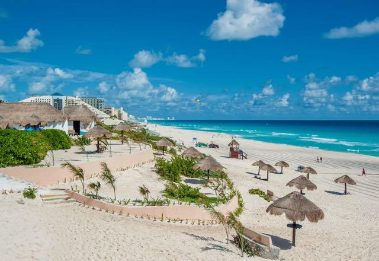
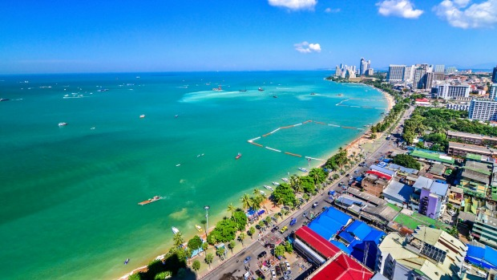

The World's Most Visited Cities in The World
HOME | BLOG
According to a report published by the World Tourism Organization, France received more visitors than any other country in the world in 2017. More than 86.9 million visitors came to France to see such world-famous attractions as the Louvre, the Eiffel Tower, Versailles, and the Arc de Triomphe.
Many of these major attractions are located in the capital city of France, Paris, which is also among the largest cities in Europe by population. Spain, the United States, and China also topped the list of the world's most visited countries.
1. New York, New York - 59.7 million visitors

New York is the most-visited city in the United States. The city welcomed 59.7 visitors in the year 2016 alone. This city is located on the east coast of the country by the New York Harbor, where the Hudson River drains into the New York Bay and on to the Atlantic Ocean. Some of the most popular sights include the Empire State Building, the Statue of Liberty, and Central Park. For individuals interested in works of art, the Metropolitan Museum of Art offers over 2 million pieces and is a wonderful place to spend the afternoon.
For a true New York City experience, visitors should include at least one of the many theater productions on Broadway Avenue in Manhattan.
2. Chicago, Illinois - 54.1 million visitors
The third most populated city in the United States is the second most visited, with 54.1 visitors passing by in 2016. Because the city is located on the shores of Lake Michigan, it experiences strong gusts of wind, giving it the nickname “Windy City.” Visitors here can enjoy an excellent arts scene, unique architecture, and extensive shopping opportunities. Art lovers should not miss the Art Institute of Chicago, which houses well over 100,000 works of art.
Some of the most famous art exhibits here include Monet, Renoir, and Seurat. For those interested in architecture, the John Hancock Center, the Tribune Tower, and the Wrigley Building are must-sees. For a shopping and unique dining experience, the Navy Pier is perfect.
3. Atlanta, Georgia - 51 million visitors

Atlanta is a major US city located in the north central Georgia. It saw 51 million tourists in 2016. This city is a major urban center of the southeastern region of the country. The two main tourist attractions in Atlanta are the Georgia Aquarium and the World of Coca-Cola. The Georgia Aquarium houses 10 million gallons of water and several thousand marine species. It was the largest aquarium in the world until 2012 when it was replaced by the Marine Life Park in Singapore. At the World of Coca-Cola, visitors can learn about the history of the Coca-Cola company. It also offers several interactive exhibits including a 1930’s soda fountain replica.
For history buffs, the Atlanta History Center gives tours into American life between the 1860’s and 1920’s and the Michael C. Carlos Museum has one of the biggest collections of ancient Egyptian, Greek, and Roman art in the southeastern region.
4. Anaheim/Orange County, California - 48.2 million
Anaheim is just outside of Los Angeles in Orange County, California. This city received 48.2 million tourists in 2016. Most of these individuals visit Disneyland, the first amusement park by Walt Disney. This park is divided into eight distinct lands including Main Street USA, Mickey’s Toontown, Adventureland, Tomorrowland, New Orleans Square, Star Wars Land, Frontierland, and Fantasyland.
In addition, Anaheim offers visitors day trips to Catalina Island, whale watching tours, and Knott’s Berry Farm amusement parks.
5. Orlando, Florida - 48 million visitors

Orlando is located in central Florida. It received 48 million visitors in 2016. The vast majority of tourists spend their time at Walt Disney World. Disney World has various golf courses, hotels, camping, two water parks, and four theme parks: Animal Kingdom, Hollywood Studios, Epcot Center, and Magic Kingdom. Universal Studios is another popular attraction that provides visitors with several interactive experiences involving movies.
For an educational element, tourists can also check out Gatorland, which has thousands of reptiles, and Kennedy Space Center, a NASA visitor area and space mission launch site.
6. Los Angeles, California - 47.3 million visitors
Los Angeles is the second largest city in the United States, and the largest city on the west coast. In 2016, 47.3 million people visited Los Angeles. Los Angeles is home to several world-renowned museums and parks.
As well as world-famous neighborhoods such as Beverly Hills and Hollywood. Los Angeles is also a favorite among tourists for its famous beaches, including Venice Beach and Santa Monica, which enjoy the pleasant southern California climate. Studio tours are a popular option for tourists in Los Angeles.
7. Las Vegas, Nevada - 42.9 million visitors

Las Vegas is the largest city in Nevada and is located in the Mojave Desert. This city is recognized around the world as an excellent spot for gambling, shopping, entertainment, nightlife, and dining. In 2016, 42.9 million tourists came to see the attractions. When people arrive, the first place they go is usually The Strip, a 2.5-mile long stretch lined with luxury hotels.
The Bellagio is one of the best of these hotels and offers an impressive water fountain display every half hour from 3 pm to 8 pm each day. Additionally, visitors can ride to the top of the 1,149-foot Stratosphere for 360° views of the city. Other famous sites include gondola rides at the Venetian Hotel, dine in a replica of the Eiffel Tower, and book tickets to a show at Caesar’s Palace.
8. Philadelphia, Pennsylvania - 42 million visitors

Philadelphia is a historic city that played an important part in the founding of the country. It is located in the eastern state of Pennsylvania along the confluence of the Delaware and Schuylkill Rivers. Because of its historic importance, the city is a common vacation destination spot with around 42 million visitors annually. Some of the most historic sites in Philadelphia include the Liberty Bell, a symbol of freedom, and Independence Hall, where the Declaration of Independence and the US Constitution were written.
Over 6 million people a year visits the Reading Terminal Market, the oldest farmer’s market in the nation, to try a variety of local dishes. For a little bit of nature while in the city, Longwood Gardens provides serenity on its 1,077 acres of artfully designed horticultural displays.
9. San Diego, California - 34.9 million visitors

San Diego is located in the southern part of California along the Pacific coastline. The climate in this city is warm and sunny all year, making it an ideal vacation destination. San Diego receives approximately 34.9 million tourists every year. Here, visitors come to check out the San Diego Zoo, which has over 4,000 animals spread out over 100 acres.
Other popular sites in the city include SeaWorld, where visitors can learn about marine life, and Mission Beach, for a day of sun and relaxation. For anyone interested in history, the Maritime Museum is full of information about the history of San Diego as a seaport. The USS Midway Museum is in a real military aircraft carrier and offers a look into the life of US Navy members stationed on these vessels.
10. San Francisco, California - 25 million visitors
Located in the norther portion of California, the most populous state in the US, is San Francisco, one of the most famous cities in the US. Much of San Francisco's fame is due to its pastel Victorian homes, eclectic food scene, and easy-going artistic culture. Famous attractions in San Francisco include Fisherman's Wharf and the City Lights Bookstore.
San Francisco is known for its cool maritime climate, which often throws off tourists, as well as for its steep hills. In 2016, 25 million tourists visited San Francisco.